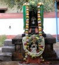
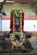
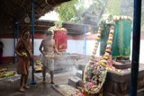
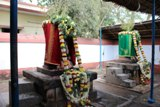

The Holy Town of KALAVAI
Kalavai is one of the holiest of the holy places in North Arcot district, Tamil Nadu and Mahaperiyava, His Holiness Sri Chandrasekharendra Saraswati Swamiji reverently called as 'Mahaperiyava' was initiated into Swami order and became the 68th Acharya of the Kanchi Kamakoti Peetam in Kalavai. Kalavai is located at about 45 kms from Kanchipuram and about 19 Kms from Arcot, in the Vellore District.
One can also find the Sri Shankara Madam here which houses the Adhishtanams of the 66th Acharya of Shri Kanchi Kamakoti Peetham His Holiness Pujyasri Chandrasekharendra Saraswati VI Shankaracharya Swamiji and the 67th Acharya of the Shri Kanchi Kamakoti Peetham His Holiness Sri Mahadevendra Saraswati (VI) Shankaracharya Swamiji.
His Holiness Pujyasri Chandrasekharendra Saraswati (VI) Shankaracharya Swamiji attained mukti at Kalavai in the year 1907 on Krishna Ashtami in the month of Magha of the cyclic year Parabhava, which as per English calendar is 1907 AD. Pujyasri Mahadevendra Saraswati (VI) Swamiji also attained mukti at Kalavai on Sukla Prathama in the month of Phalguna of the cyclic year Parabhava, which as per English calendar is 1907 AD.
It is known that Pujyasri Mahaperiyava Swamigal was blessed with the Darshan of His Holiness Pujyasri Chandrasekharendra Saraswati VI Shankaracharya Swamiji in the year 1906 and at that time itself His Holiness Pujyasri Chandrasekharendra Saraswati VI Shankaracharya Swamiji was very much aware in his mind that Mahaperiyava, His Holiness, Chandrashekara Swamigal would be the Peetadhipathi of Kanchi Kamakoti Peedam, one day.
The Madam also runs a home for the aged and a home for the physically handicapped.Vedhaparayanam classes for young are also held here regularly for both Yajur Vedam and Sama Vedam students and one can actually forget all their woes and worldly problems just listening to the young Shikshaks (Students) chanting the vedas in Unison. Their chanting the Rudram is truly awesome!!
FOR KALAVAI PERIYAVA SARITHRAM Click Here
Photographs
Find below photographs taken during one of the Aradhanas at Kalavai, which was attended by His Holiness, Pudhuperiyava, Shri Shri Jayendra Saraswathi Swamigal.
Pudhu Periyavah's Guru Bhakthi is beyond words and even those who have seen his Holiness's devotion and bhakthi to the Gurus with their own eyes can only feel the devotional deluge but can never explain it in words.
Hara Hara Shankara!! Jaya Jaya Shankara!!
|  |  |  |  |
Reproduced from MahaPeriyava Facebook post
Periyaval had once come to Kalavai after padayatra. He was to camp there for a few days. Two vilva trees of an excellent breed in the Kalavai campus had withered. Vedapuri Sastri and I were unhappy and were talking about it. We just could not reconcile ourselves to these excellent trees dying away. We submitted our feelings to Periyaval. Periyaval listened to us without a trace of feeling on his face.
We had gone to him with great expectations and thought that he would say, "Is that so", and so on. We were disappointed. He could have atleast sent for the workers in the Kalavai Brindavanam and questioned them, we thought. He could have asked them, "Why have you been so careless? You have let these ancient trees wither. If you had watered the trees at least now, then this would not have happened!" Nothing of the sort happened.
After a while, Periyaval completed his anustana, and came out with his gata, the wooden pot, which he used. There was perhaps a glass of water in it. He poured it to the withered trees and went away.
We forgot all about this in the midst of our work. But the trees did not. The two withered vilva trees began to revive barely ten days later and fresh green sprouts dotted the dry branches.
We were thrilled. We did not tire talking of this. Short of beating a drum to draw the attention of the devotees and others, we repeated over and over again, "It all happened by Periyaval's grace. He poured about half a glass of water to each of the trees. The trees revived as if fed by nectar," to everyone and anyone who came to Kalavai.
Actually our words were laced with an egoistic feeling. After all, we were the first to tell Periyaval that the trees had withered! We prided ourselves over the fact that the trees got a new lease of life because of our responsible effort. We thought if we carried the message to Periyava, he would bless us profusely and say, "It was all because of your effort!" How would we forego such an opportunity? More than anyone else, he ought to be told about our accomplishment! So, went straight to him.
"The two vilva trees have begun to revive and sprout new leaves, by Periyava's grace!" A flash of wonder, a bit of surprise, some amazement? Not a bit. Periyava's face was peace personified. It was the same composure that we saw, unruffled by any trace of feeling, when we told him about the trees having withered. The absence of sorrow, regret or disappointment then, and now, the absence of surprise or wonder. He remained unmoved.
The wise man who knows his self is not grieved by loss or delighted by gain. As for us, we are but ordinary mortals. - as narrated by Sri Matha Balu
Source: In the Presence of the Divine
Hara Hara Shankara!! Jaya Jaya Shankara!!